No licence needed
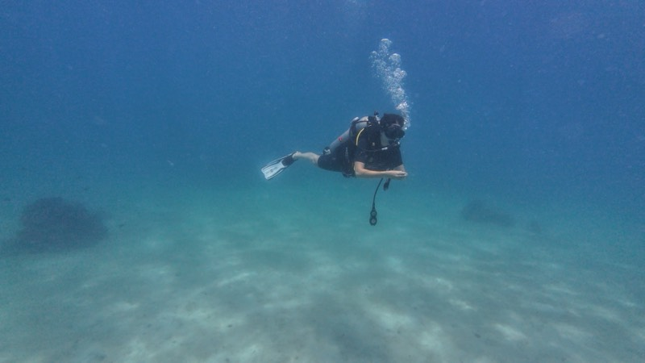
Try Dive
First time underwater. One full day, maximum two students per instructor, at Koh Ma or Sail Rock.
Per person4,200฿
Details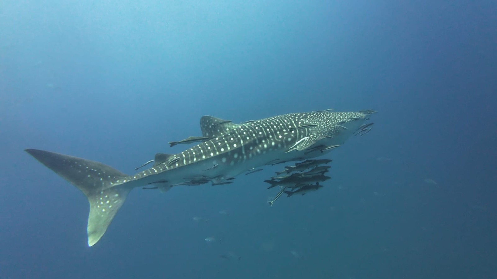
SSI dive centre · Chaloklum, Koh Phangan
Our own boat leaves Chaloklum at 9:30 for Sail Rock — the best diving in the Gulf of Thailand. Small groups, patient instructors, and a whale shark if the Gulf feels generous.
Scroll to descend

First time underwater. One full day, maximum two students per instructor, at Koh Ma or Sail Rock.
Per person4,200฿
Details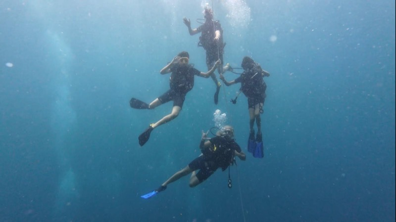
Certified in three days and good to 18 m anywhere in the world. Max four students, dives at Sail Rock.
3 days · SSI12,900฿
Details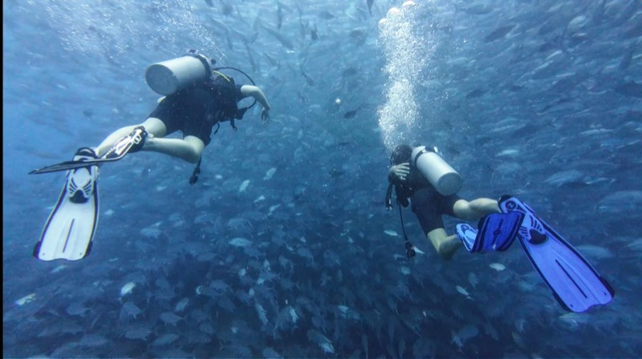
Groups of four divers maximum. Sail Rock, Koh Ma, Little Sail Rock and the oil rig.
Per trip3,200฿
DetailsMost boats leave with 30+ divers. We cap ours at 20, and introductory dives run two students per instructor. Fewer people means real attention underwater, gear assembled without a rush, and space on deck between dives.
We cast off at 9:30, which puts us at Sail Rock and Koh Ma while other boats are already heading home. Emptier sites, better visibility.
We opened in January 2024 with a clear idea of what a dive day should feel like: safe, unhurried, and genuinely fun. Our SSI instructors have more than ten years of experience leading dives in Egypt, the Philippines, Indonesia and Thailand — and that standard now lives in Chaloklum, aboard our own boat.
Beyond Sail Rock we dive Koh Ma, Little Sail Rock and the oil platform. When conditions allow, certified divers hit several sites in a single day — more marine life, less time travelling.
All of our kit is new as of 2024 and checked every day. Regulators, BCDs and wetsuits in XS to XXL, with official SSI servicing from day one.
A day on the Rungworawan
Meet us at the shop in Chaloklum. Paperwork, sizing, and a coffee while we load the boat.
We choose the route by tide and conditions, then brief you properly on the way out.
Down the line together. Beginners stay shallow and calm; certified divers go deeper.
Food, water, shade and a swim. Long enough to off-gas properly and talk about what you saw.
A different site or a different profile — photography, deeper, or a slow drift for turtles.
Rinse, log the dive, and we send you the underwater video before you've dried off.
Experiences
Daily trips to Sail Rock for certified divers and complete beginners alike. Every price below includes your SSI instructor or guide, full equipment, snacks and water, and the underwater video of your dive.
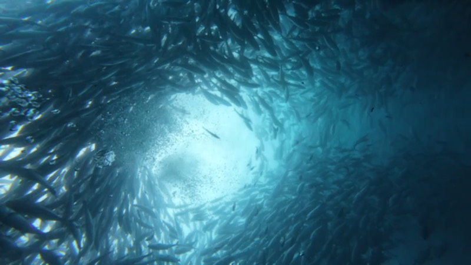
1 day · Certified divers
Four divers maximum per guide. Sail Rock, Koh Ma, Little Sail Rock or the oil platform.
3,200฿
More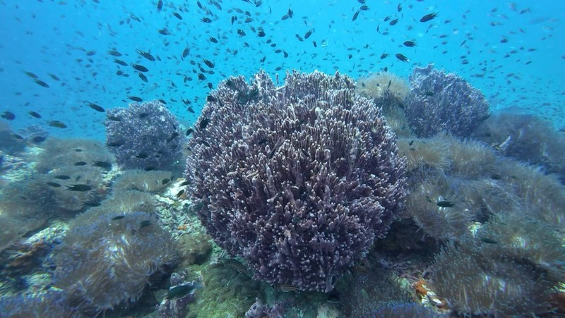
1 day · No certification
Your first breath underwater, two students per instructor, in calm water at Koh Ma.
4,200฿
More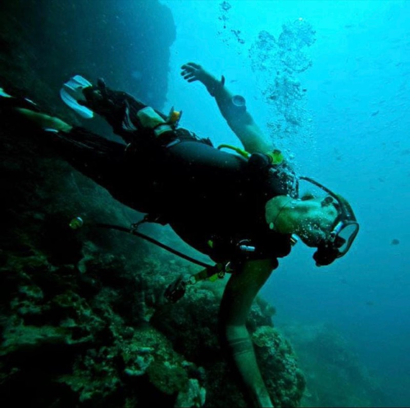
1½ days · No certification
A step past the Try Dive: more skills, more bottom time, and a proper taste of diving.
5,200฿
More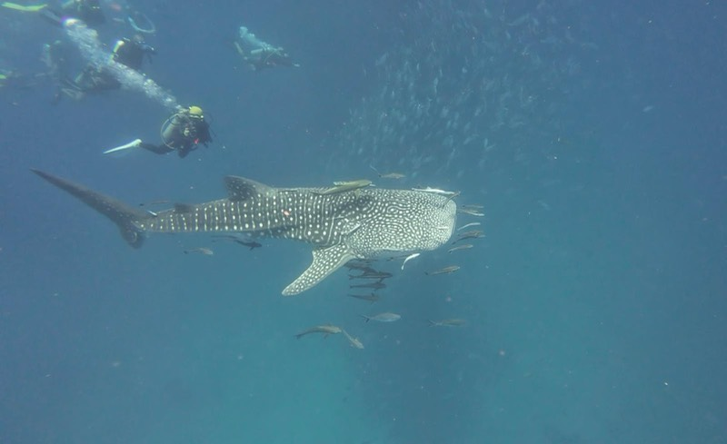
1 day · Stay at the surface
Come along for the ride and the view. Good for families, non-divers and nervous first-timers.
1,200฿
MoreSSI courses
International SSI training in small groups — maximum four students per instructor, our own boat, and instant digital certification the moment you pass. From your very first breath to Rescue Diver.
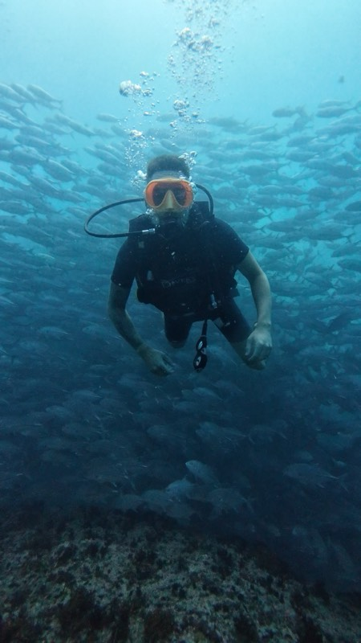
Open Water dives
run at Sail Rock
Start here · 3 days
The licence that works everywhere. Three days takes you from the shallows of Koh Ma to certified and independent to 18 metres, anywhere in the world.
Build on Open Water: deeper sites, sharper buoyancy, new skills.
2 days
12,500฿
DetailsPick your specialties and stack them toward Advanced.
2 days
12,500฿
DetailsPlan and run dives to 40 m — the full height of Sail Rock.
2 days
8,500฿
DetailsThe course that changes how you dive with other people.
2 days
11,600฿
DetailsLonger bottom time, shorter surface intervals. Done in a day.
1 day
from 4,200฿
DetailsDive sites
Sail Rock is the headline and it deserves to be. But the reason to dive from Chaloklum is everything else within reach of it.
Move your torch across a site to bring the colour back
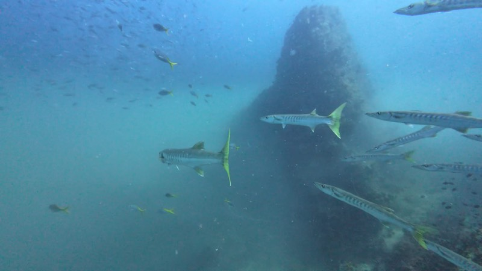
All levels
5–40metres
The famous open-sea pinnacle, and the vertical tunnel through it — The Chimney. One hour out by boat. The best diving in the Gulf of Thailand, and a must-do.
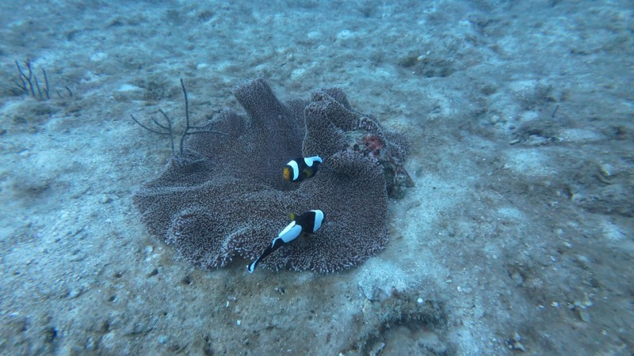
Beginners & courses
5–18metres
Ten minutes from Chaloklum, no current, and a genuinely healthy hard-coral garden. This is where your first perfect dive happens.
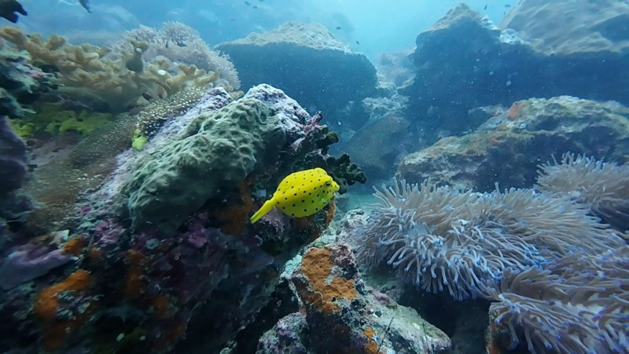
Intermediate
8–20metres
A mini Sail Rock ten minutes east of Chaloklum. Far fewer divers, just as much life. The secret jewel for escaping the crowds.
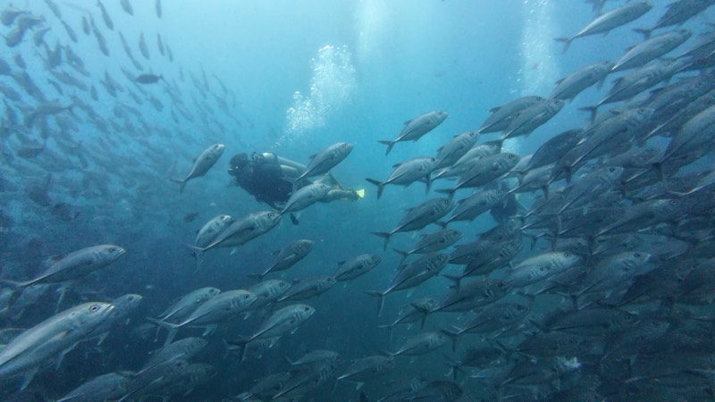
Advanced · 20+ dives
10–30metres
An artificial structure standing alone in open water, with huge schools using it as shelter. The most different, most adrenalising dive in the Gulf.
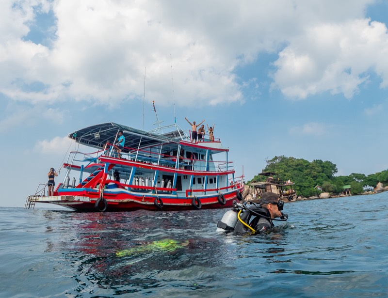
Rungworawan
Chaloklum, Koh Phangan
Our own boat
Spacious, stable and fully equipped. She takes us out to Sail Rock every day, and having our own boat is the whole reason we can run small groups, leave at 9:30, and change the plan when the tide says so.
Every regulator, BCD and wetsuit is checked daily and serviced to official SSI schedule. Turn up with a swimsuit; we have the rest in your size.
The Phangan crew
Spanish, English, French, Dutch, Hebrew and Russian on board. Between us we have more than a decade of diving in Egypt, the Philippines, Cambodia, Vietnam, Indonesia and Thailand — which mostly means we're good at explaining currents and marine life to people who have never worn a mask.
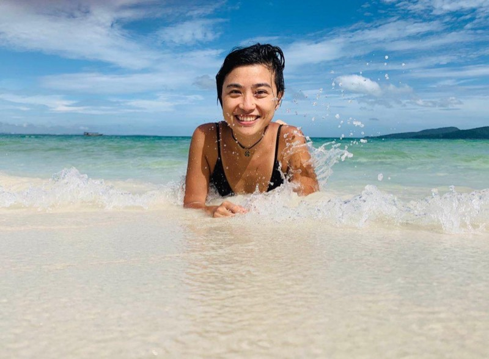
The boss
Rui is the heart of the shop. He keeps everything running and gives you the welcome you deserve — in Chinese, Spanish or English, so you feel at home from the moment you walk in.
SSI Instructor #112758
Over 1,000 dives in the Gulf of Thailand. Every trip is built to be safe, fun and matched to your level, so you can stop worrying from the moment you step aboard.
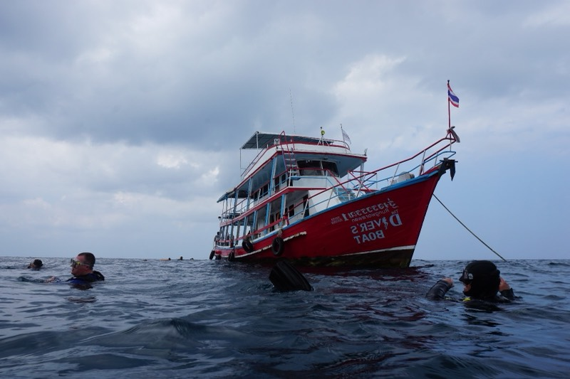
Our ship
Spacious, stable and fully equipped. She goes to Sail Rock every day. Come on the next trip and be part of her story.
Photo gallery
Turtles, whale sharks and smiles underwater — all shot on our own trips out of Chaloklum. No stock photos.
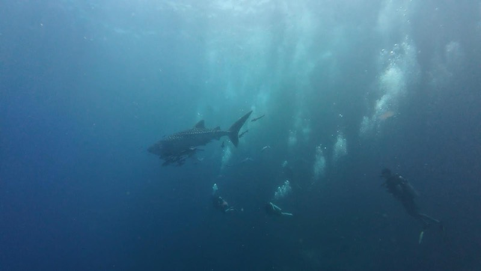
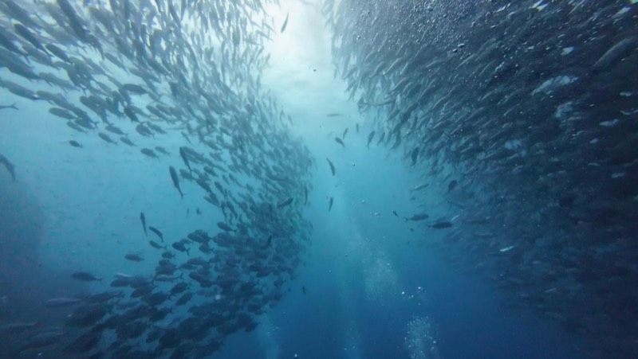
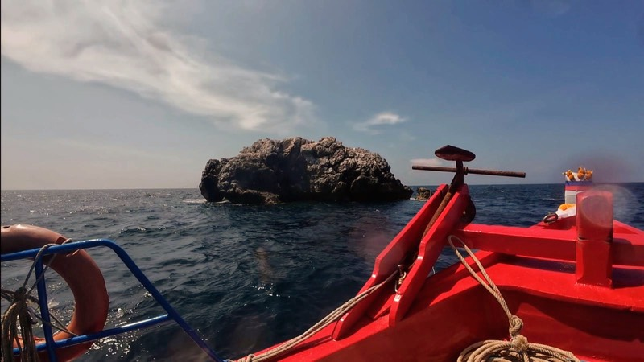
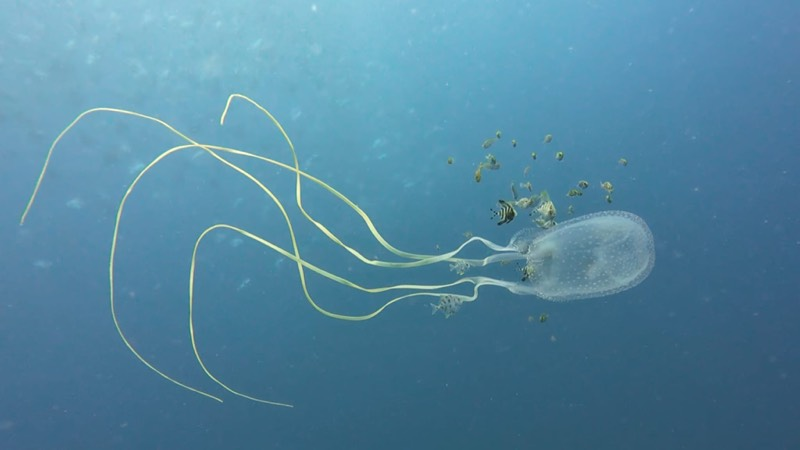
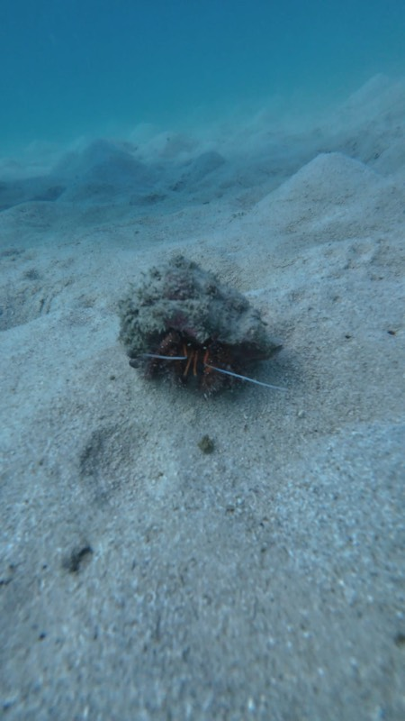
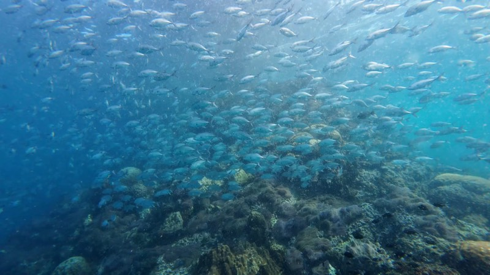
Get in touch
Message us on WhatsApp and you'll get a real person, usually within the hour. Tell us your level and your dates — or that you have no idea where to start, which is also a perfectly good message to send.
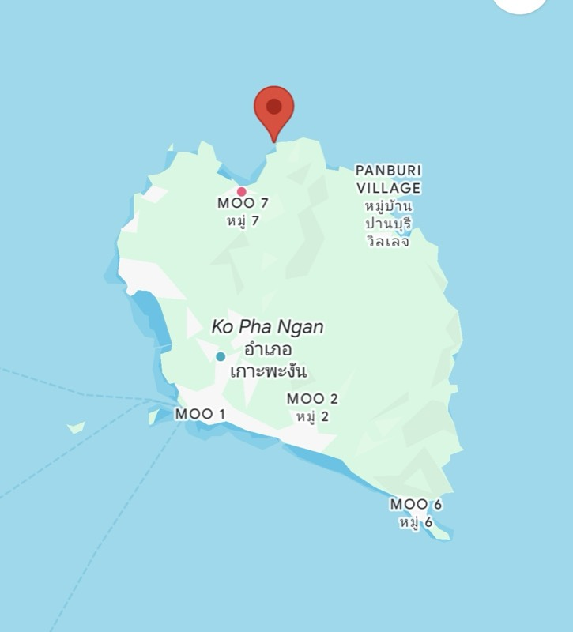
The Try Dive. One full day, two students per instructor, and no certification needed — you'll breathe underwater for the first time in the calm, current-free water at Koh Ma. If you love it, the Basic Diver and Open Water course pick up from exactly where you finished.
Yes, and plenty do. Non-divers can join the boat and snorkel at Sail Rock for 1,200฿ while the rest of the group dives. Message us on WhatsApp with your group's ages and experience and we'll put together a plan that keeps everybody happy on the same boat.
Honestly, maybe. Sail Rock is one of the best places in the Gulf of Thailand for them and our guests do see them — but they are wild animals on their own schedule. What you will reliably see are big schools of barracuda, batfish and trevally around the pinnacle.
A swimsuit, a towel and sun protection. All diving equipment is included — regulators, BCDs and wetsuits in XS to XXL, all new as of 2024 and checked daily. Snacks, water and the underwater video of your dive are included too.
Spanish, English, French, Dutch, Hebrew and Russian. Rui also speaks Chinese, so most people get their briefing in their own language.